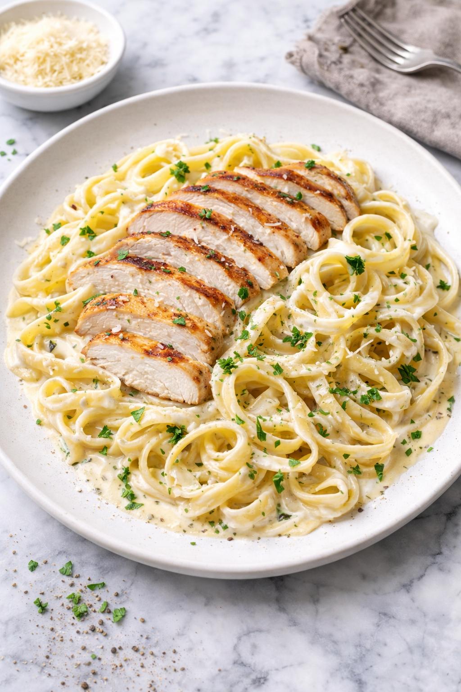

Chicken Alfredo Recipe
Home

Description:
Grilled chicken breast served over tender fettuccine, tossed in a rich, creamy Parmesan Alfredo sauce and finished with fresh herbs.
Ingredients
- 2 boneless, skinless chicken breasts (about 1 lb)
- 12 oz fettuccine pasta
- 3 tbsp unsalted butter
- 1½ cups heavy cream
- 1 cup freshly grated Parmesan cheese
- 2 cloves garlic, minced
- ¾ tsp salt
- ½ tsp black pepper
- 2 tbsp fresh parsley, chopped
How to Make Chicken Alfredo
- Season chicken breasts with salt and pepper.
- Grill or pan-sear the chicken until fully cooked, then slice and set aside.
- Cook fettuccine pasta in salted water until al dente.
- In a saucepan, melt butter and add cream over medium heat.
- Stir in grated Parmesan cheese until the sauce thickens.
- Toss the cooked pasta in the Alfredo sauce until evenly coated.
- Top with sliced chicken and garnish with fresh herbs before serving.